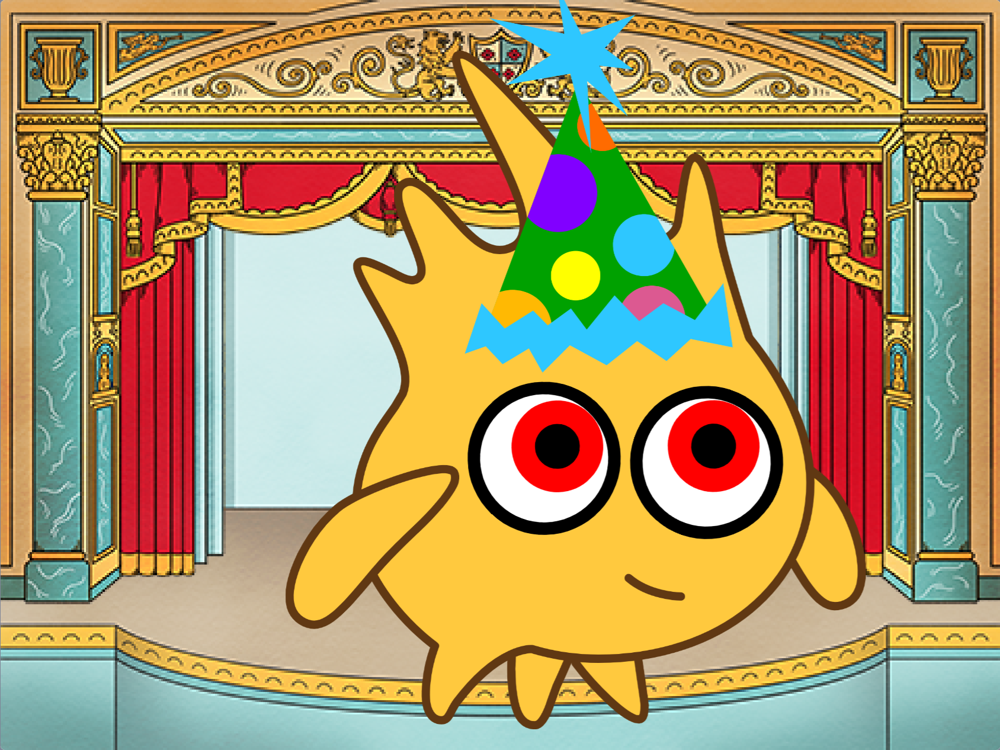
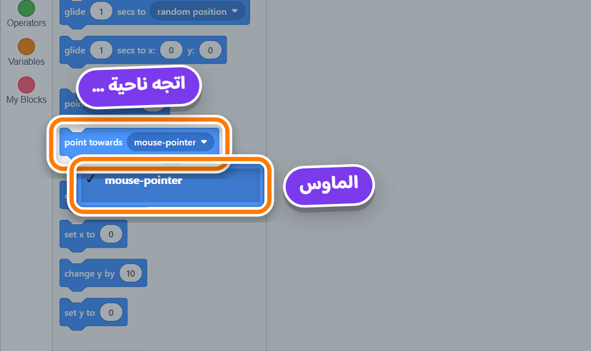
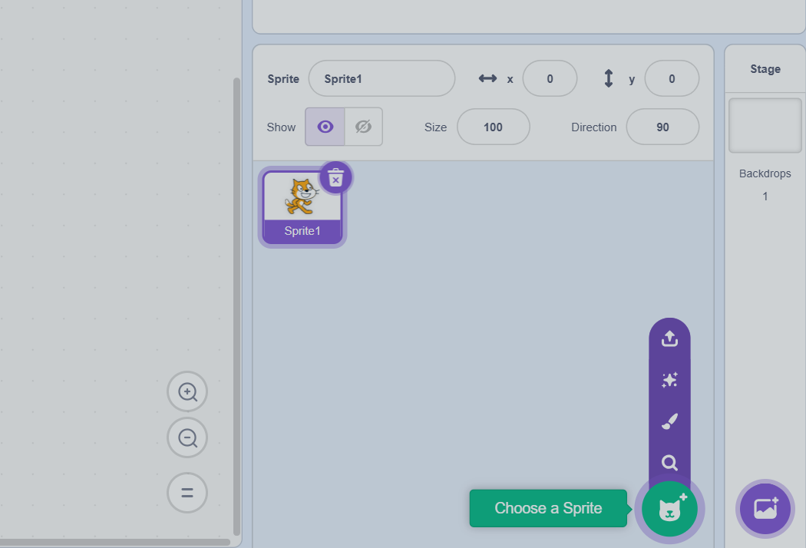
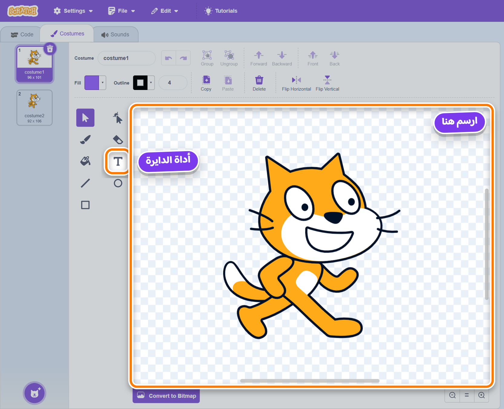
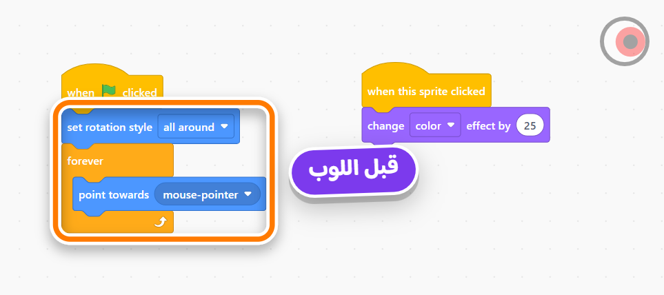
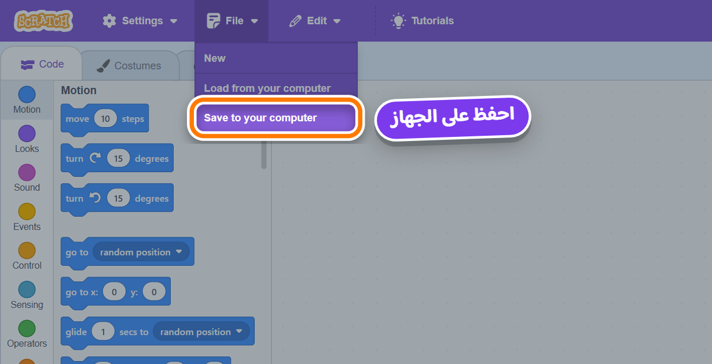

المشروع: Silly eyes · الجلسة A من 2 · Design
مستوى تالت؟ 🎨 · ارسموا وش ✏️
60 ثانية
نفس التعليمة للكل
أنا هقولك إزاى
إيه — من عندك
تقرر الحاجة شكلها إيه وبتعمل إيه. الشخصية · المكان · الألوان · الحركة.

Gobo بعيون بتتبع الماوس.
نفس الكود ينفع لقطة، سمكة، صاروخ...
when flag clicked
set rotation style [all around]
forever
point towards [mouse-pointer]
end
كل عين سبرايت لوحدها. الحاجة اللى بتتحرك لوحدها = سبرايت لوحدها.
السهم بتاع الماوس. point towards mouse-pointer = بص ناحيته. جوه forever = اتبعه.

السبرايت لما يلف، بيوجه يمينه ناحية الهدف.
البؤبؤ على اليمين = البؤبؤ يبص للماوس.
الصليب الأزرق الصغير = نقطة اللف.
لو الدايرة مش فى النص — هتنط.
روبوت متعطل
مشروع جديد · اختياراتك · بدلوا عند 15
أى سبرايت من المكتبة.
مش عارف؟ Surprise فى قائمة الزرار الأزرق.
⚠️ ما تختارش واحد عنده عيون كبيرة واضحة.
🏠 مكان عادى؟ ولا 🎪 مجنون؟
أى خلفية.
Size ← رقم كبير — 200؟ 300؟ — لحد ما تملا الستيج.

حط الماوس على الزرار الأزرق — ماتضغطش
هتطلع قائمة ← الفرشاة 🖌️ Paint

أداة الدايرة ⭕ على الشمال
امسك Shift وإنت بترسمFill أبيض · Outline أسود
اسحب الدايرة لحد ما الصليب الأزرق الصغير يبقى فى نصها.
دايرة صغيرة — لونها من عندك — على اليمين جوه البيضا.
Eyeballالمربع فوق فى محرر الرسم — Sprite2 ← امسحه ← Eyeball
اسحبها على وش الشخصية. Size لو كبيرة أو صغيرة.

when flag clicked set rotation style [all around] forever point towards [mouse-pointer] end
الخطوات: Motion 💙 ← point towards mouse-pointer ← جوه forever.
قبله: set rotation style all around
العلم. حرك الماوس. بتبص؟ 👁️
كليك يمين على Eyeball فى السبرايتات تحت الستيج ← duplicate ← اسحب النسخة.
نسخة طبق الأصل من السبرايت — بكوده وكوستيوماته. كليك يمين ← duplicate.

الاسم: silly-eyes
وبعدين: الشخصية تفضل ورا العيون — على الشخصية:
when flag clicked forever go to back layer end
التمثال
AI 🤖على الشاشة الكبيرة — إنتم بتقترحوا
الأداة بتشرح — ما بتكتبش
لو كتبتلك كود مش فاهمه — إنت ماتعلمتش حاجة.
forever؟»repeat وforever؟»loop»اللى بيكتب — إنت.
AI: ____روح للجهاز اللى على يمينك — حرك الماوس 👀
💾 احفظوا